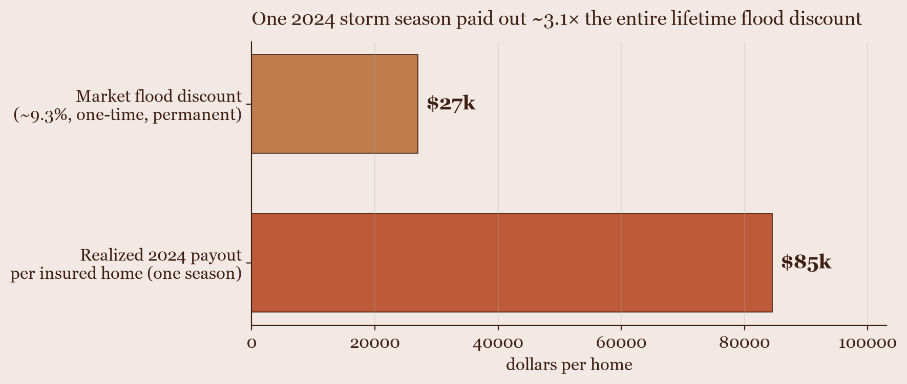
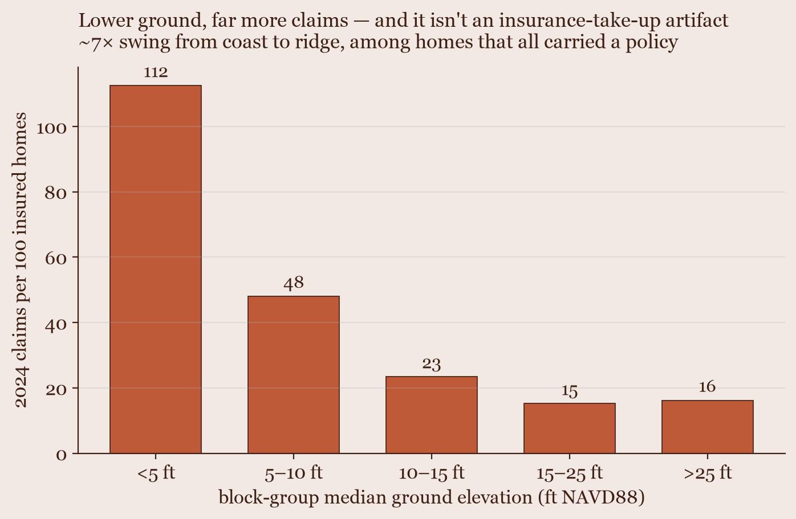
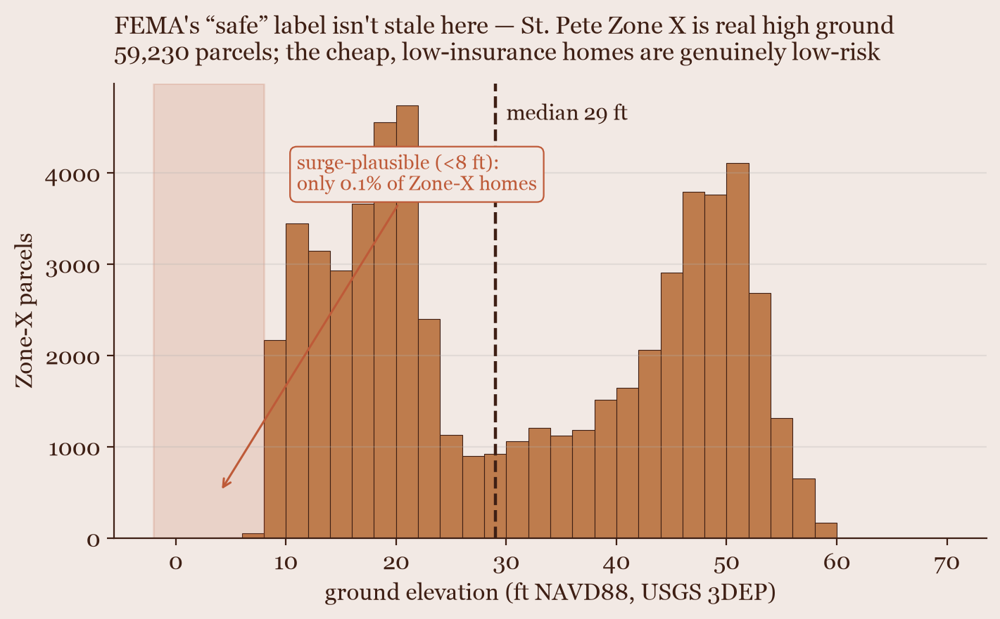
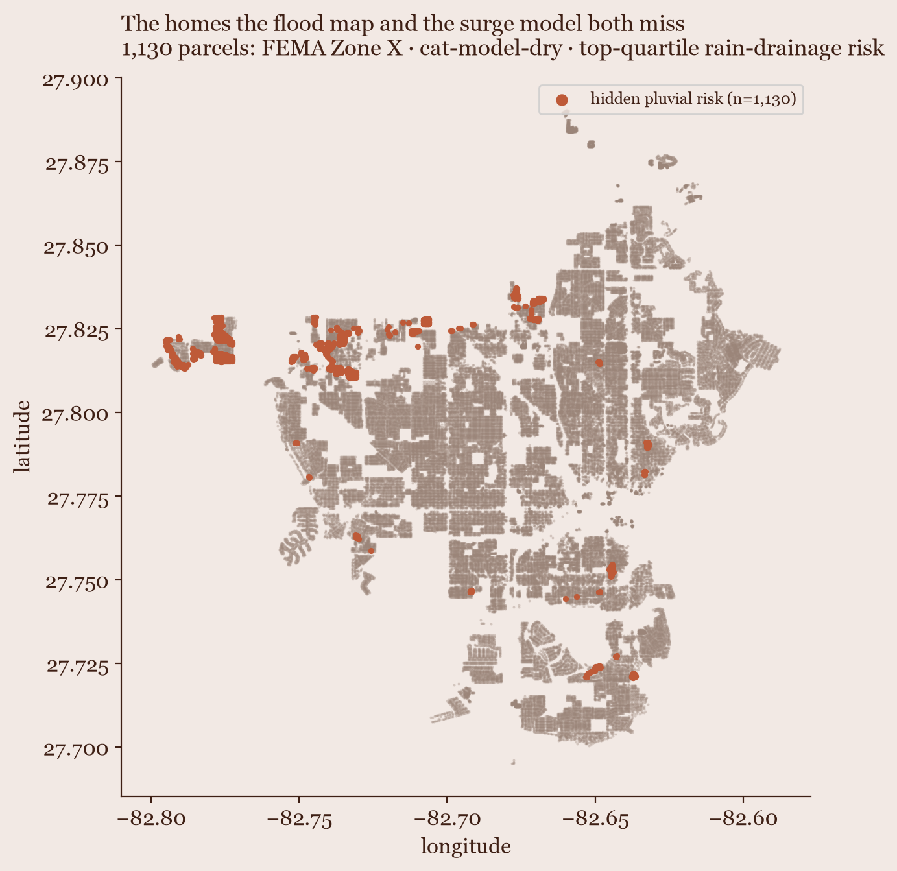

A St-Petersburg, FL property-risk analysis — built because the consumer tools couldn't answer the question.
The question
Buying a house in Florida, flood risk is the dominant financial variable — insurance swings dwarf price differences. But Zillow, Redfin, and Realtor can't filter for what actually matters:
ground elevation & evacuation zone
whether it's a cosmetic flip
construction type & true all-in monthly cost
So I built my own analysis of the St-Pete market.
My criteria
Block construction
Slab foundation
FEMA Zone X (non-flood zone)
Evac Zone E or non-evac
≥ 20 ft above sea level (25–30 ideal)
Not a flip
The data
Ten keyless public sources, joined at parcel / zip / sewershed grain:
Flood zones aren't a native parcel field — I spatial-joined FEMA FIRM maps to parcel lat/lon. Insurance is estimated per property.
Finding 1 — the market's flood discount is ~3× too small

Buyers haircut a flood-zone home by ~9% (~$27k, one-time). One 2024 storm season paid ~$85k per insured home — ~3× the lifetime discount, in one season.
Finding 2 — it's an elevation story, two methods agree

Model-free: low ground predicts 2024 claims (ρ ≈ −0.77) and the gradient survives normalizing for who bought insurance. A from-scratch cat-model reproduces it independently.
Finding 3 — FEMA Zone X is real high ground here

The skeptic's worry is stale maps hiding risk in cheap Zone-X homes. Not here: median Zone-X elevation is 29 ft, only 0.1% below the surge-plausible 8 ft line. (Caveat: holds in St-Pete, not county-wide.)
The thesis
Elevation is the hedge. Flood-zone homes carry repricing downside the current discount doesn't reflect — and the physical cost of flood risk dwarfs the price signal attached to it.
Phase II
Expanding the analysis to other forms of flooding
"Is this house safe from water?" turned out to mean more than storm surge — so the analysis grew into rainfall and the sewer system.
A from-scratch flood catastrophe model
Exposurewhat's at risk (RCV, elevation)
→
Hazardhow deep the water
→
Vulnerability% damage at depth
→
Financial$ loss, NFIP terms
A deterministic four-module loss model over all St-Pete single-family parcels — ~$2.6B modeled 2024 NFIP loss, with an independent validation ladder. Modeled-vs-realized reconciles 2.14× → 1.58× once you adjust for who actually held a policy.
Finding 4 — the homes the flood map and my surge model both miss

Scoring every parcel on pluvial (rain-drainage) risk flags 1,130 homes that FEMA calls Zone X and my surge model leaves dry — yet sit low and under-drained. The local storm-drain layer Zillow and even First Street can't see.
It became a platform
I ingested the city's stormwater & sanitary-sewer networks (St-Pete GeoHub) and built three vulnerability layers beyond surge:
Pluvial — rain ponding where drainage is under-served
Compound — surge submerges outfalls so rain can't drain
I found the house — trading some square footage for the criteria that keep it dry, insurable, and high. And the analysis stands as a reusable, multi-hazard property-risk platform.